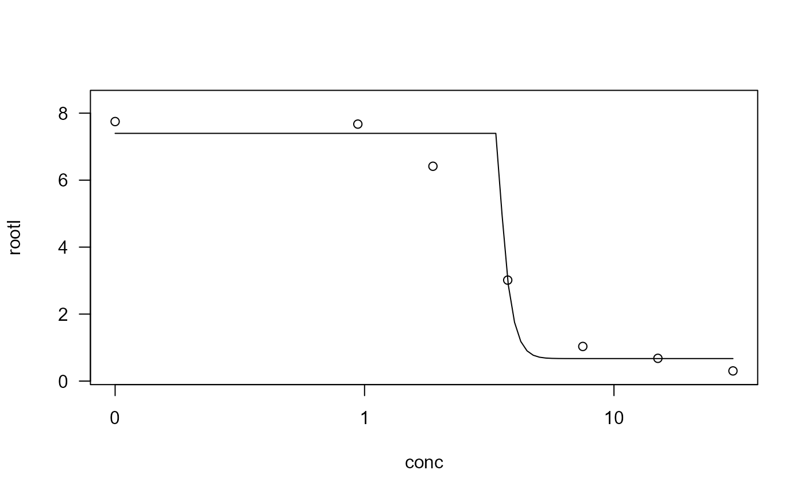

The NEC model is a dose-response model with a threshold below which the response is assumed constant and equal to the control response. It has been proposed as an alternative to both the classical NOEC and the regression-based EC/ED approach.
numeric vector specifying which parameters are fixed and at what value they are fixed. NAs are used for parameters that are not fixed.
a vector of character strings giving the names of the parameters (should not contain ":"). The default is reasonable (see under 'Usage').
optional character string used internally by convenience functions.
optional character string used internally by convenience functions.
A list containing the nonlinear function, the self starter function and the parameter names.
The NEC model function proposed by Pires et al (2002) is: $$f(x) = c + (d-c)\exp(-b(x-e)I(x-e))$$ where \(I(x-e)\) is the indicator function equal to 0 for \(x<=e\) and 1 for \(x>e\).
Pires, A. M., Branco, J. A., Picado, A., Mendonca, E. (2002) Models for the estimation of a 'no effect concentration', Environmetrics, 13, 15–27.
nec.m1 <- drm(rootl ~ conc, data = ryegrass, fct = NEC.4())
summary(nec.m1)
#>
#> Model fitted: NEC (4 parms)
#>
#> Parameter estimates:
#>
#> Estimate Std. Error t-value p-value
#> b:(Intercept) 3.16938 393.27265 0.0081 0.993650
#> c:(Intercept) 0.67201 0.23463 2.8641 0.009592 **
#> d:(Intercept) 7.39666 0.20260 36.5091 < 2.2e-16 ***
#> e:(Intercept) 3.41729 41.27705 0.0828 0.934842
#> ---
#> Signif. codes: 0 '***' 0.001 '**' 0.01 '*' 0.05 '.' 0.1 ' ' 1
#>
#> Residual standard error:
#>
#> 0.7017905 (20 degrees of freedom)
plot(nec.m1)
